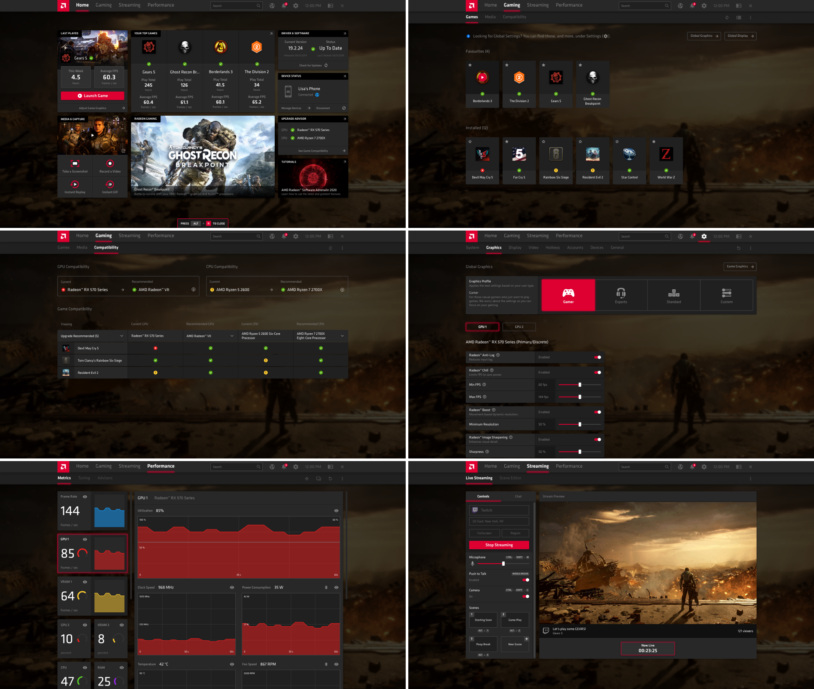
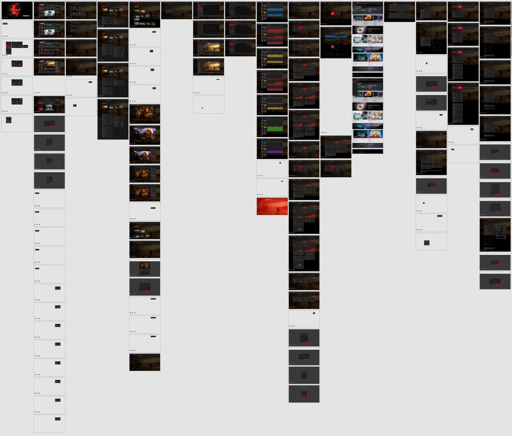

Team •Designers: Sebastian B, Christopher
H, Product Manager: Adrian C
Date • September to
December 2019
Tools • Adobe XD, Useberry
Context
Radeon Software (RS) is a device driver and utility package for AMD’s
Radeon graphics cards and APUs. RS includes features like game profile
management, performance monitoring, recording and streaming, and more.
During my internship, I worked on the upcoming release of the RS
Adrenalin 2020 Edition (RSA 2020). I focused on improving the UX by
designing and usability testing a high fidelity prototype.
Current State
Prior to the release of the RSA 2020, the software was known as Radeon
Settings (Adrenalin 2019 Edition). This version had a UI that had been
used for years — users were extremely familiar with the information
architecture and very comfortable with navigation.
Future State
In the the upcoming RSA 2020 driver update, RS would have a completely
redesigned UI and a number of new innovative features like Radeon Boost,
Radeon Anti-Lag, Radeon Image Sharpening, Radeon Integer Display
Scaling, AMD Link Streaming, and Integrated Web Browsing.

Most of the UI for RSA 2020 was complete when I started my internship.
However, the actual UX of the new design had not been tested yet — using
the mockups, it was my job to create a high fidelity prototype and
conduct usability testing. While the future state was more modern and
sleek, what mattered was if it was actually intuitive or not. Would
users have an easy time understanding the information architecture and
navigating the software, let alone even opening the UI in the first
place?
User Flows
Since RSA 2020 included several new features, it was necessary to design
user flows for both new and existing features. It was also important to
include a variety of tasks for users of different levels of experience
with gaming and RS (Novice PC User, Entry Level User, Experienced User,
etc). How would the UX compare for experienced vs. novice users? Keeping
these in mind, I designed the following user flows and created a high
fidelity prototype accordingly — complete with animations and overlays.
User Flows/Tasks
Open Radeon Software
Launch a game (Gears 5)
Open RS overlay and RS sidebar
Check software and hardware settings
Enable/disable Radeon FreeSync
Enable and/or modify Radeon Boost
Enable Radeon performance metrics overlay
Open performance tools and overclock GPU
Open performance tuning, modify fan speed
Open web browser
Check for an update
Change default settings profile
Open and change video settings
Create a new scene for streaming
Start a streaming session
Enable and capture an instant replay
Enable and record a video of desktop
Edit and trim a video
Upload and share a video

Usability Testing
After designing a high fidelity prototype, it was time to test the
revamped UI and UX. To get some context, I first asked users a couple of
screening questions:
Screening Questions
How experienced are you with Radeon Software?
Do you consider yourself a Gamer, eSports Enthusiast, and/or Content
Creator? (can check all options)
How many hours do you spend gaming in a week? (Never, 1-10, 11-20,
21+)
Key Insights
While the UI was more smooth and visually appealing, it took up an
uncessary amount of visual space
The UI was mostly easy to navigate, but felt a bit overly complicated
and layered with the exessive number of nested menus
The majority of users were willing to learn and get used to the new UI
— a few users were reluctant and preferred the older UI
The new features (i.e. Radeon Boost/Anti-Lag/Image Sharpening/Integer
Display Scaling) were highly anticipated
There were some concerns with 'bloatware' using excessive RAM (ex.
questioning the necessity of an integrated web browser)
Results
Due to product deadlines, RSA 2020 was unfortunately released before any
design changes could be implemented. However, subsequent releases of RSA
have received updates based on feedback from both usability testing and
actual use. RSA's current release is the 2022 Edition and is used by
millions of gamers around the globe. Below is an introductory video for
the first release of RSA 2020.